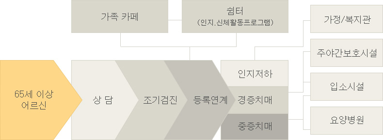

금년 12월부터 전국 252개 보건소에 치매안심센터가 설치되어, 치매어르신과 가족들이 1:1 맞춤형 상담, 검진, 관리, 서비스 연결까지 통합적인 지원을 받을 수 있게 된다.
치매안심센터 내부에는 치매단기쉼터와 치매카페가 만들어져, 치매어르신의 초기 안정화와 치매악화 지연을 돕고 치매가족의 정서적 지지 기반이 되어줄 예정이다.
치매안심센터에서 받은 상담, 사례관리 내역은 새롭게 개통될 '치매노인등록관리시스템'을 통해 전국 어디에서든 유기적, 연속적으로 관리된다.

치매안심센터가 문을 닫는 야간에는 치매상담콜센터 1899-9988을 이용하도록 하여 24시간 상담이 가능한 치매 핫라인이 구축된다.
그리고, 앞으로는 보건복지콜센터(129)와도 연계를 강화하여 이용자의 편의성을 높이겠다는 계획이다.
그간에는 신체기능을 중심으로 1등급부터 5등급까지 장기요양 등급을 판단하였기 때문에 신체기능이 양호한 경증 치매 어르신들은 등급판정에서 탈락하였으나,
앞으로 신체기능이 양호한 치매어르신도 모두 장기요양보험의 대상자가 될 수 있도록 장기요양의 등급체계를 개선하는 방안을 추진한다.
새롭게 등급을 받는 분들은 신체기능 유지와 증상악화 방지를 위해 인지활동 프로그램을 이용할 수 있으며, 간호사가 가정을 방문하여 복약지도나 돌봄 관련 정보를 제공하게 된다.
치매환자에 특화된 치매안심형 시설의 확충도 추진한다.
치매안심형 시설이란, 일반 시설보다 요양보호사가 추가 배치되고, 신체나 인지 기능 유지에 관련된 치매맞춤형 프로그램을 제공하는 시설로, 공동거실 등이 설치되어 가정과 같은 환경을 제공한다.
활동성이 강한 경증 치매어르신이 주로 이용하게 될 치매안심형 주야간보호시설(현재 9개소)과 중증 치매어르신이 주로 이용하게 될 치매안심형 입소시설(현재 22개소)도 2022년까지 단계적으로 확충될 예정이다.
아울러, 장기요양시설 지정갱신제 도입, 장기요양 종사자 처우개선 등을 통해 서비스 질 관리와 종사자 전문성 강화도 동시에 추진된다.
이상행동증상(BPSD)이 심해서 시설이나 가정에서 돌보기 어려운 중증환자는 앞으로 전국적으로 확충될 치매안심요양 병원을 통해 단기 집중 치료를 받을 수 있게 된다.
이상행동증상(BPSD: Behavioral and Psychological Symptoms of Dementia)은 치매에 동반되는 감정적, 정신적 증상을 의미하며, 환각, 폭력, 망상 증상이 동반된 중증 치매환자 중 10~20%는 입원치료가 필요하다고 한다.
치매안심요양병원은 우선 전국에 분포되어 있는 공립요양병원에 시범적으로 치매전문병동을 설치하여 지정, 운영할 계획이며 향후 단계적으로 확대될 계획이다.
치매 이외에 다른 내·외과적 질환이나 치과 질환 등이 동반된 경우에도 걱정없이 진료 받을 수 있도록 치매통합진료 수가를 신설하는 등 관련 수가도 손을 볼 계획이다.
건강보험이 확대되면서 치매에 대한 의료비 부담이 줄어든다.
지난 8월 9일 문재인 대통령이 직접 발표한 건강보험 보장성 강화 대책에도 포함되었듯이 20%~60% 수준이었던 중증 치매환자의 의료비 본인부담률이 올해 10월부터 10%로 인하되고,
치매안심요양병원은 우선 전국에 분포되어 있는 공립요양병원에 시범적으로 치매전문병동을 설치하여 지정, 운영할 계획이며 향후 단계적으로 확대될 계획이다.
인지영역별로 기능저하 여부를 정밀하게 검사하는 종합 신경인지검사(SNSB, CERAD-K 등)와 치매가 의심되는 환자에 대한 MRI 검사도 금년 하반기부터 순차적으로 건강보험이 적용된다. 진단검사 비용은 상급종합병원 기준으로 100만원 정도 였으나, 건강보험 적용에 따라 40만원 이하로 줄어들 것으로 보인다.
그동안 중위소득 50% 이하 수급자에게 적용되던 장기요양 본인부담금 경감 혜택도 대상을 늘려나가는 방안을 추진한다.
또한, 그동안 부담이 컸던 식재료비와 기저귀와 같은 복지용구도 지원하는 방안이 검토된다.
기저귀는 경제적 부담(월평균 약 6~10만원)으로 인해 치매환자 가족의 수요가 가장 큰 품목으로, 장기요양 급여가 적용되면 가정에서 치매어르신을 모시는 분들의 경제적 부담이 줄어들 것으로 기대된다.
전국에 350여개가 분포되어 있는 노인 여가시설인 노인복지관에서도 치매예방을 위한 프로그램이 제공될 예정이다.
주로 인지기능이 약화된 어르신이나 75세 이상 독거어르신 등 치매 위험에 노출된 분들이 대상이 될 전망이며, 이분들에게는 미술, 음악, 원예 등을 활용한 인지활동서비스가 제공된다.
66세 전 국민을 대상으로 실시하는 국가건강검진의 인지기능검사도 보다 정밀화되고 보다 촘촘해진다.
그간에는 5개 항목으로 구성된 1차 간이검사를 실시한 후 추가적인 검사가 필요할 때 15개 항목으로 구성된 인지기능 장애검사를 실시하였으나, 앞으로는 처음부터 15개 항목의 인지기능 장애검사를 실시하게 된다.
검사주기도 단축되어, 66세부터 4년마다 받던 것을 앞으로는 2년마다 받게 된다.
검사결과 치매가 의심되면 치매안심센터로 연결되어 상담, 치매검사, 약제비 지원 등 지속적인 관리를 받게 된다.
그동안 중위소득 50% 이하 수급자에게 적용되던 장기요양 본인부담금 경감 혜택도 대상을 늘려나가는 방안을 추진한다.
이 밖에도 치매가족 휴가제, 치매어르신 실종 예방사업, 치매노인 공공후견제도 등을 통해 치매 친화적인 사회 환경을 조성하고,
지역사회 주민의 교육과 참여를 통해 치매에 대한 인식을 개선하고 치매어르신을 서로 돕도록 유도하는 치매안심마을 조성 사업과 치매파트너즈 양성 사업도 확대해나갈 계획이다.
보건복지부와 과학기술정보통신부가 힘을 합하여, 치매에 대해 체계적인 연구 계획을 수립한다.
새롭게 구성되는 국가치매연구개발위원회를 통해 국가치매연구개발 10개년 계획을 수립하고,
치매환자와 가족의 부담을 덜어주고, 일상생활에서 체감할 수 있는 기술 개발에 힘을 쏟을 계획이다.
또한 혈액검사등을 통한 조기진단과 원인규명, 예측, 예방 등 치매를 사전에 예방하고 관리할 수 있는 기술과 치매치료제 등 치매의 근본적 해결을 위한 중·장기 연구도 지원할 예정이다.
치매 국가책임제 대책을 속도감 있게 추진해나갈 수 있도록 보건복지부 내에 치매정책 전담부서인 치매정책과를 두고,
지방자치단체가 일선 현장에서 정책을 집행함에 있어 부담을 덜 느낄 수 있도록 국고 재정을 투입하고 지역 특화사업을 추진할 수 있는 여건을 조성해나갈 계획이다.
박능후 보건복지부 장관은 보고대회 후 인근의 송파구 치매지원센터를 방문하여 치매상담, 조기검진, 인지재활 프로그램 등을 직접 체험하고 치매지원센터 종사자들과 간담회를 가진다.
간담회에서 종사자들은 일선에서 일하는 보람과 애로사항에 대해 이야기하고, 박능후 장관은 종사자들의 노고에 고마움을 표시하고 격려의 말을 전할 것으로 알려졌다.
박능후 보건복지부 장관은 '치매 국가책임제는, 치매를 개인의 문제로 보던 기존의 인식을 바꿔서 국가가 치매환자와 가족의 고통을 분담하겠다는 것'이라고 강조하며, '더 이상은 치매로 인해 가정이 붕괴됐다는 비극적인 뉴스가 나오지 않도록 치매에 대한 종합적인 지원체계를 잘 준비해나가겠다'고 밝혔다.
출처 : 치매 부담없는 행복한 나라